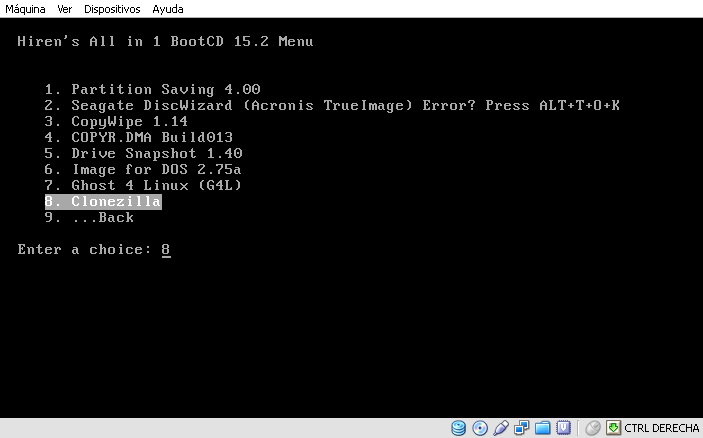

- Módulo: Fundamentos de Hardware
- Título del trabajo: A1: Software general y clonación
- Componentes del grupo: Alejandro Ortega Freire, Ariadna Jiménez Rodríguez, Miguel Ángel González Rodríguez
- Curso Académico: 2013/2014
- Fecha de entrega: 18 de marzo de 2014
NOTA 1: La presente práctica se inició sin tener ninguna máquina real al dejar de funcionar el servidor que teníamos, así que se realizó en una máquina virtual con Sistema Operativo Windows XP.
Durante la realización de la actividad hemos podido preparar un portátil, mientras continuábamos con la práctica, con una instalación Dual de Windows 7 y OpenSuse 13.1, que nos permitirá realizar las siguientes prácticas con una máquina real.
1.- Software General
1.1.- Instalaciones
- Realizar las siguientes instalaciones en una máquina con el sistema operativo Windows.
- Instalación de alguna herramienta de compresión. Por ejemplo: Winzip, WinRar, etc.
Imágenes 1 y 2: Winzip 18.0 instalado y en uso.
Imágenes 3 y 4: 7zip 9.2 instalado y en uso.
- Instalación de alguna herramienta de tratamiento de imágenes. Por ejemplo: GIMP, etc.
Imágenes 5 y 6: GIMP 2.8 instalado y en uso.
- Instalación de algún antivirus. Por ejempl: AVAST, Antivir, AVG, etc.
- Avast PRO ANTIVIRUS: se realizó una prueba de análisis del disco duro y correción de amenazas.
 Página Oficial.
Página Oficial.
Imágenes 7 y 8: Análisis con Avast PRO ANTIVIRUS.
Imagen 9:Protección con Avast PRO ANTIVIRUS.
- Instalar algún programa anti-spyware, anti-troyanos, anti-rootkits.
- Malwarebytes Anti-Malware 1.75: aplicación que es a la vez anti-spyware, anti-troyanos y anti-rootkits. Se realizó una prueba de análisis del disco duro y correción de amenazas.
Página Oficial.
Imágenes 10 y 11: Actualización de bases de datos de amenazas y análisis del disco duro con Malwarebytes 1.75.
Imágenes 12 y 13: Fin y resultado del análisis.
- Instalar algún programa para la limpieza de archivos de Internet, etc.
Imágenes 14 y 15: Uso de Diskcleaner 1.7.
- Instalar algún programa limpiador del registro.
- CCleaner 4.11: se realizaron dos pruebas, una de limpieza del disco duro y otra de limpieza del registro.
Página Oficial.
Imágenes 16 y 17: Instalación de CCleaner 4.11 y limpieza del disco duro.
Imágenes 18 y 19: Limpieza del registro con CCleaner 4.11.
 Principio del Punto 1.1 |
Principio del Punto 1.1 |  Principio del Bloque 1 |
Principio del Bloque 1 |  Fin del punto 1.2 |
Fin del punto 1.2 |  Índice
Índice
1.2.- Drivers
- Instalar el programa SlimDrivers para buscar, descargar e instalar las actualizaciones más recientes de los controladores del hardware.
Imágenes 20 y 21: Instalación de SlimDrivers 2.2 y uso.
Imágenes 22 y 23: Análisis de drives del equipo con SlimDrivers 2.2.
- Descargar e instalar en un pendrive alguna aplicación portable.
- Everest Ultimate Edition 5.5 PORTABLE
Imágenes 24 y 25: Programa Everest en su formato portable en un pendrive.
Principio del Punto 1.2 | Principio del Bloque 1 | Fin del punto 2.1 | Índice
2.- Clonación
2.1.- Clonación en máquina virtual
- En el caso de no poder realizar la clonación en máquinas reales, usaremos máquinas virtuales. Para ello partiremos de una MV con SO Windows.
- En VirtualBox añadiremos un segundo disco duro.
- Disco duro SATA si clonamos Window 7.
- Disco duro IDE si clonamos Window XP.
- El objetivo será clonar el contenido del disco1 Win1 en el disco2 Win2.
Imagen 26: Añadir nuevo disco duro IDE a la máquina virtual de Windows XP.
- Iniciar el equipo con CDLIVE Clonezilla, HIREN u otro similar.
- Hiren's BootCD 15.2: es un Live CD que contiene utilidades para resolver averías de arranque del ordenador. Es útil, cuando el sistema operativo primario no es capaz de iniciarse. El Hiren's BootCD tiene una lista extensa de programas. Las utilidades con funcionalidad similar en el disco, se agrupan en menús y aunque parecen redundantes, poseen diferencias entre ellas que las hacen complementarias. Dentro de los programas que se incluye está el Clonezilla que es el utilizado en esta práctica para realizar la clonación del disco duro.
Página Oficial.
- Proceder a clonar el disco con Windows sobre sobre el disco nuevo. Para ello se siguió el siguiente proceso:
- Iniciar la máquina con el CD Live Hiren's BootCD.
- Dentro de las opciones a elegir en el menú inicial, seleccionar "Programas Dos" (Dos Programs).
- Entre los "Programas Dos" elegir Clonezilla.
Imágenes 27 y 28: Accediendo a "Programas Dos".


Imágenes 29 y 30: Cargando Clonezilla.
- Seguir los pasos que indica el programa para clonar el disco1 en el disco2.
Imágenes 31 a 38: Clonación de disco1 en el disco2 con Clonezilla.
- Una vez terminado el proceso de clonación obtenemos dos instalaciones de Windows idénticas (Win1 y Win2).
- Reiniciar el SO de la partición Windows (Win1) y comprobarlo.
Imagen 39: Comparativa entre el disco de origen (C:) y el clonado (E:).
Principio del Punto 2.1 | Principio del Bloque 2 | Fin del punto 2.2 | Índice
2.2.- Bootloader Windows XP
- Ahora se modifica el fichero C:\BOOT.INI del disco 1, para poder elegir en el arranque entre los dos Windows.
- Herramientas -> Opciones de carpeta -> Ver . Desmarcar "Ocultar extensiones..." y "Ocultar archivos...". Marcar "Ver ficheros ocultos..."
- Editar C:\BOOT:INI y añadir líneas en negrita:
[boot loader]
timeout=30
default=multi(0)disk(0)rdisk(0)partition(1)\WINDOWS
[operating systems]
multi(0)disk(0)rdisk(0)partition(1)\WINDOWS="Microsoft Windows XP Professional" /noexecute=optin /fastdetect
multi(0)disk(1)rdisk(0)partition(1)\WINDOWS="Microsoft Windows XP Professional Clonado" /noexecute=optin /fastdetect
Imagen 40: Modificación de C:\BOOT:INI.
- Al reiniciar la máquina virtual se ven dos SSOO Windows XP para iniciar el equipo. El segundo corresponde al sistema clonado.
Imagen 41: Selector de inicio entre los dos Windows.
Imagen 42: El disco duro clonado es idéntico al original.
Principio del Punto 2.2 | Principio del Bloque 2 | Fin del punto 3 | Índice
3.- Registro de Windows
- Aplicar algunos de los siguientes "trucos" del registro de windows XP en el SO clonado.
- Se aplicaron los siguientes cuatro:
Imagen 42: liberar.vbe
Imagen 43: Acelerar menú de inicio.
Imagen 44: Crear el mensaje en el registro.

Imagen 45: Mensaje al iniciar Windows XP.
Imagen 46: Descaragar dll.
Principio del Punto 3 | Principio del Bloque 3 | Índice
Alejandro Ortega Freire - Ariadna Jiménez Rodríguez - Miguel Ángel González Rodríguez - 1ºASIR
Fundamentos de Hardware